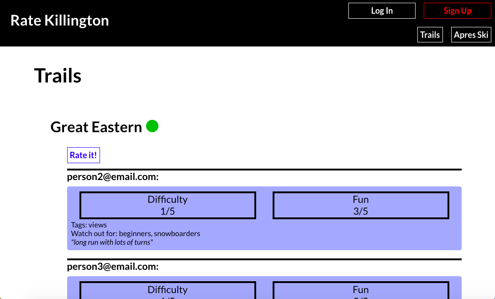

Qtracks Website
NYU Senior Project
Spring 2022

Keep track of the music you listen to on Spotify by rating, tagging, and journaling albums and songs!
Overview
I'm passionate about listening to music and keeping everything I listen to in a big collection. I wanted to make the music-tracking process easier and more effortless, so I created a website that loads music from users' Spotify accounts and lets them tag, rate, and journal songs and albums.
Backend
User data is stored on MongoDB. This includes a document representing each user, and a document for each album pulled from each user's Spotify, along with subdocuments for all the tracks on each album. I wrote HTTP requests to allow me to add and authenticate users, add albums to their database, and update them when the user logs them.
Frontend
I use React.js for the frontend. Here users can sign up and log in, are asked to sign into their Spotify accounts, and are then taken to the homepage where they are shown albums pulled from their Spotify accounts. They can rate, tag, and journal the albums and their tracks. They can also navigate to their user database page, where they can see all the music they've logged on the website.